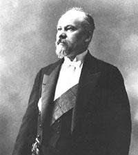

Sous certains aspects, la monnaie française semble avoir relativement bien traversé la Grande Guerre. Entre 1914 et la fin 1918, le franc a perdu moins de 5 % de sa valeur vis-à-vis du dollar et de la livre, et les réserves d'or de la Banque de France se sont même accrues. Mais les apparences sont trompeuses. Une forte hausse des prix a érodé le pouvoir d'achat, et le pays n'a jamais été aussi lourdement endetté.
Dans les années 1920, les attaques contre le franc se multiplient. En 1926, le gouverneur de la Banque de France Émile Moreau note dans ses carnets : « Personne ne veut plus de billets. C'est un sauve-qui-peut général. » L'arrivée de Raymond Poincaré au ministère des Finances permet le retournement. Après dix-huit mois de débats passionnés entre « revalorisateurs » (qui rêvaient du retour au franc germinal d'avant-guerre) et « stabilisateurs », ces derniers l'emportent.
« Le franc à quatre sous. » — Expression populaire après la stabilisation de 1928
Le 25 juin 1928, le franc Poincaré est officiellement défini à 65,5 milligrammes d'or au titre de 900 millièmes. Comparé au franc germinal de 1803, la dévaluation approche les 80 %. Cette stabilisation met fin à l'instabilité monétaire de l'après-guerre, redonne confiance aux marchés et permet le retour d'excédents budgétaires. L'industrie française bénéficie d'une relative sous-évaluation de la monnaie.
Conséquence directe : on procède au retrait progressif des monnaies d'or et d'argent de la circulation. La célèbre Semeuse d'Oscar Roty disparaît des pièces courantes ; il faudra attendre le Nouveau Franc de 1960 pour son retour. Les années 1930 restent dans le souvenir des Français comme celles des pièces percées au type Lindauer (5, 10 et 25 centimes en maillechort), conçues dès la guerre pour économiser le métal.
Cette page présente les principaux types de la période Poincaré : les petites valeurs Lindauer, les centimes et francs Morlon en bronze-aluminium, la controversée 5 francs Bazor (surnommée « Bedoucette » et rejetée par le public), les 5 francs Lavrillier, ainsi que les 10 et 20 francs Turin en argent 680 ‰.
Sources : sceco.univ-poitiers.fr · infonumis.info · catalogues Gadoury & Le Franc
Les monnaies
5 Centimes LINDAUER – Maillechort
Références : F.123 · G.171
10 Centimes LINDAUER – Maillechort
Références : F.139 · G.287
25 Centimes LINDAUER – Maillechort
Références : F.172 · G.381
50 Centimes MORLON
Revers : LIBERTE - EGALITE / FRATERNITE ; 50 / CENTIMES entre deux cornes d'abondance.
Total 527 000 000 ex. (1931-1941 et 1947). Circulation jusqu'en 1949.
Références : F.192 · G.423
1 Franc MORLON
Références : F.219 · G.470
2 Francs MORLON
Références : F.268 · G.535
5 Francs BAZOR
Revers : LIBERTE / EGALITE / FRATERNITE / 5 / FRANCS au-dessus d'une grappe de raisins, branches d'olivier et de chêne, épis de blé.
Rejetée par le public (trop petite face aux 5 F d'argent d'avant-guerre). Circulation jusqu'en 1937.
Références : F.335 · G.753
5 Francs LAVRILLIER – Nickel
Revers : RF / 5 / FRANCS dans une couronne de laurier ornée de sept bagues.
Total 118 000 000 ex. (1933-1939). Circulation jusqu'en 1939.
Références : F.336 · G.760
5 Francs LAVRILLIER – Bronze-aluminium
Références : F.337 · G.761
10 Francs TURIN
Revers : 10 / FRANCS / (millésime) / LIBERTE / EGALITE / FRATERNITE entre deux épis de blé.
Première Marianne couronnée de lauriers. Total 234 600 000 ex. (1929-1939). Circulation jusqu'en 1945.
Références : F.360 · G.801
20 Francs TURIN
Références : F.400 · G.852